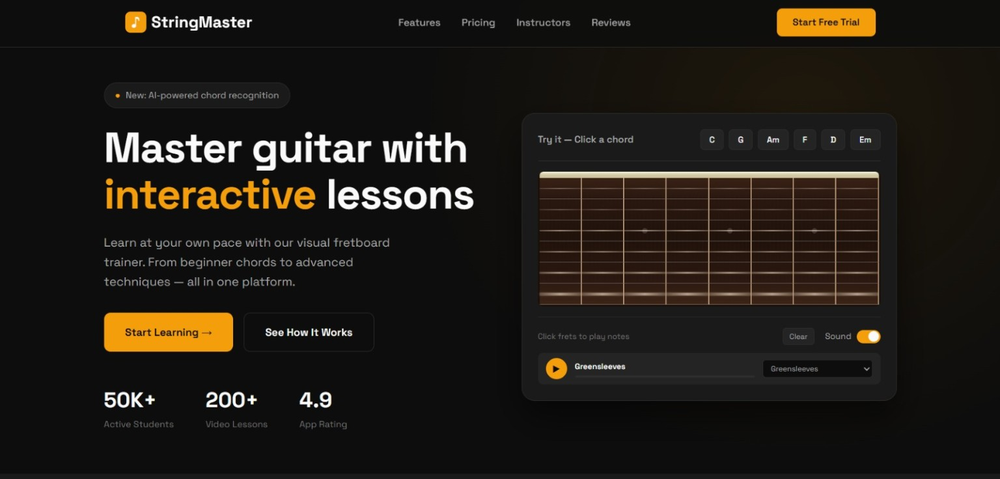

MY WORK
Project Showcase
Three sample website concepts supplied for this portfolio project.

Project 01
StringMaster
StringMaster is a modern, interactive guitar-learning
platform designed for online educators and guitar
lesson services. It includes an interactive fretboard
where visitors can click to play notes, explore chord
shapes and hear synthesised guitar sounds.

Project 02
Aurum Gold
Aurum Gold is described as a luxurious website platform
for investment companies, gold bullion dealers and
precious-metals financial services. It features gold
accents, product displays, price-tab filtering, a
slider and a contact form, with a responsive
professional layout.

Project 03
Nimsy Agro Solar Concept
At Nimsy Agro Solar Concept, the goal is to present
access to affordable clean energy that supports
agricultural production. The supplied project
description highlights the challenges smallholder
farmers face from high fuel costs, droughts, erratic
rainfall and heatwaves, and presents solar-powered
irrigation and post-harvest solutions as part of
the response.
Visit Nimsy Agro Solar Website →